Visual Studio Code 中的 JavaScript
Visual Studio Code 内置了 JavaScript IntelliSense、调试、格式化、代码导航、重构以及许多其他高级语言功能。
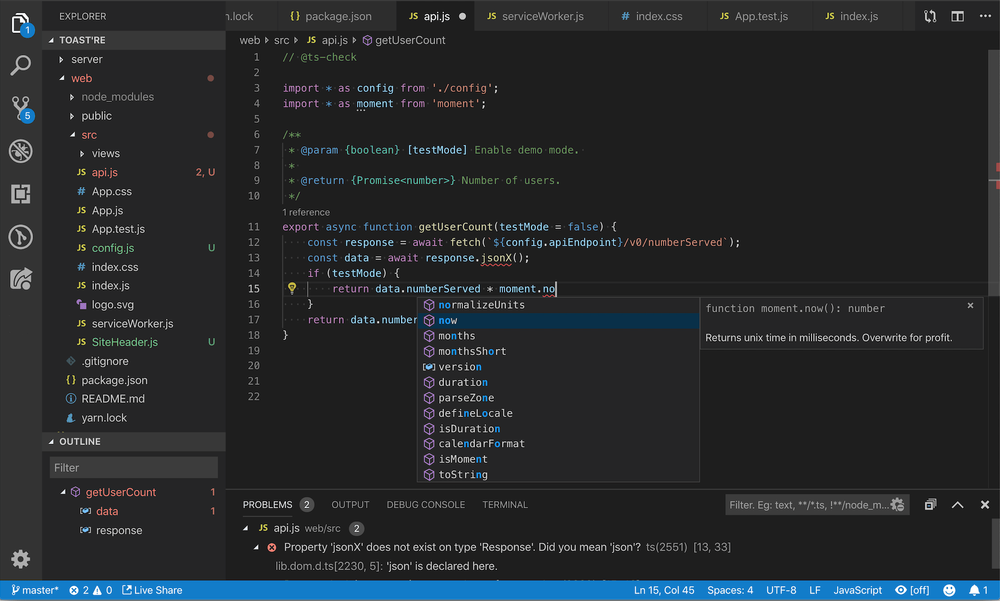
这些功能大多开箱即用，但部分功能可能需要基本配置才能获得最佳体验。本页总结了 VS Code 自带的 JavaScript 功能。来自 VS Code 扩展市场 的扩展可以增强或更改这些内置功能中的大部分。有关这些功能如何工作以及如何配置的更深入指南，请参阅使用 JavaScript。
IntelliSense
IntelliSense 为您提供智能代码补全、悬停信息和签名信息，让您能更快、更准确地编写代码。
Sorry, your browser doesn't support HTML 5 video.
VS Code 在您的 JavaScript 项目中提供 IntelliSense；适用于许多 npm 库，如 React、lodash 和 express；也适用于其他平台，如 node、无服务器或 IoT。
有关 VS Code JavaScript IntelliSense 的信息、如何配置以及常见 IntelliSense 问题的故障排除帮助，请参阅使用 JavaScript。
JavaScript 项目 (jsconfig.json)
jsconfig.json 文件定义了 VS Code 中的 JavaScript 项目。虽然 jsconfig.json 文件不是必需的，但在以下情况下您会希望创建一个：
- 如果工作区中的所有 JavaScript 文件不应被视为单个 JavaScript 项目的一部分。
jsconfig.json文件允许您将某些文件从 IntelliSense 中排除。 - 确保工作区中的一部分 JavaScript 文件被视为单个项目。如果您正在使用隐式全局依赖（而非
imports声明依赖）的旧版代码，这非常有用。 - 如果您的工作区包含多个项目上下文，例如前端和后端 JavaScript 代码。对于多项目工作区，在每个项目的根文件夹中创建一个
jsconfig.json。 - 您正在使用 TypeScript 编译器来降级编译 JavaScript 源代码。
要定义一个基本的 JavaScript 项目，请在工作区根目录中添加一个 jsconfig.json：
{
"compilerOptions": {
"module": "CommonJS",
"target": "ES6"
},
"exclude": [
"node_modules"
]
}有关更高级的 jsconfig.json 配置，请参阅使用 JavaScript。
[!TIP]
要检查一个 JavaScript 文件是否属于 JavaScript 项目，只需在 VS Code 中打开该文件并运行 JavaScript: Go to Project Configuration 命令。此命令会打开引用该 JavaScript 文件的jsconfig.json。如果该文件不属于任何jsconfig.json项目，则会显示通知。
代码片段
VS Code 包含基本的 JavaScript 代码片段，在您输入时会自动建议；
Sorry, your browser doesn't support HTML 5 video.
有许多扩展提供额外的代码片段，包括针对 Redux 或 Angular 等流行框架的代码片段。您甚至可以定义自己的代码片段。
[!TIP]
要禁用代码片段建议，请在设置文件中将setting(editor.snippetSuggestions)设置为"none"。setting(editor.snippetSuggestions)设置还允许您更改代码片段在建议中出现的位置：在顶部（"top"）、在底部（"bottom"）或按字母顺序内联排列（"inline"）。默认值为"inline"。
JSDoc 支持
VS Code 理解许多标准的 JSDoc 注解，并使用这些注解提供丰富的 IntelliSense。您甚至可以选择使用 JSDoc 注释中的类型信息来对您的 JavaScript 进行类型检查。
Sorry, your browser doesn't support HTML 5 video.
通过在函数声明前输入 / 并选择 JSDoc comment** 代码片段建议，可以快速为函数创建 JSDoc 注释：
要禁用 JSDoc 注释建议，请禁用 setting(js/ts.suggest.jsdoc.enabled) 设置。
悬停信息
将鼠标悬停在 JavaScript 符号上可以快速查看其类型信息和相关文档。
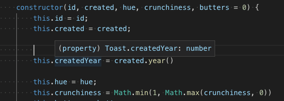
kb(editor.action.showHover) 键盘快捷键会在当前光标位置显示此悬停信息。
签名帮助
在编写 JavaScript 函数调用时，VS Code 会显示函数签名信息，并突出显示当前正在补全的参数：
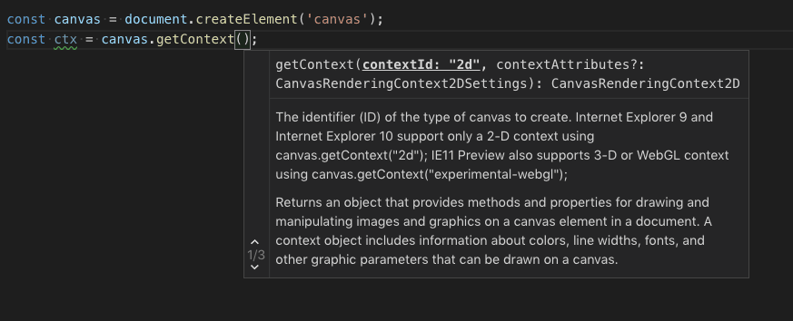
当您在函数调用中键入 ( 或 , 时，签名帮助会自动显示。按 kb(editor.action.triggerParameterHints) 可以手动触发签名帮助。
自动导入
自动导入通过建议项目中及其依赖项中可用的变量来加速编码。当您选择其中一个建议时，VS Code 会自动在文件顶部添加相应的导入。
只需开始输入即可查看当前项目中所有可用 JavaScript 符号的建议。自动导入建议会显示它们将被导入的来源：
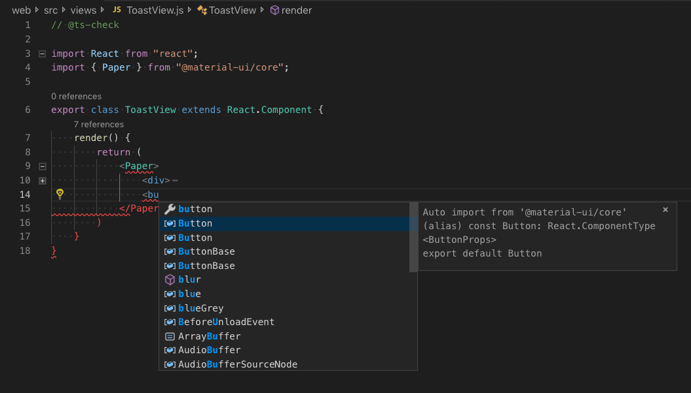
如果您选择其中一个自动导入建议，VS Code 会为其添加导入。
在此示例中，VS Code 在文件顶部添加了来自 material-ui 的 Button 导入：
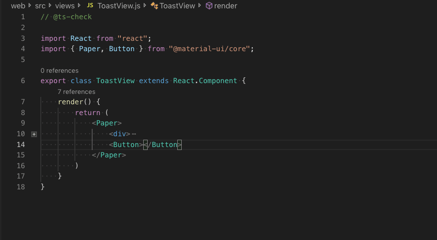
要禁用自动导入，请将 "js/ts.suggest.autoImports" 设置为 false。
[!TIP]
VS Code 会尝试推断要使用的最佳导入样式。您可以使用setting(js/ts.preferences.quoteStyle)和setting(js/ts.preferences.importModuleSpecifier)设置，显式配置添加到代码中的导入的首选引号样式和路径样式。
粘贴时添加导入
当您在编辑器之间复制和粘贴代码时，VS Code 可以在粘贴代码时自动添加导入。当您粘贴包含未定义符号的代码时，会显示一个粘贴控件，让您可以选择作为纯文本粘贴或添加导入。
此功能默认启用，但您可以通过切换 setting(js/ts.updateImportsOnPaste.enabled) 设置来禁用它。
您可以通过配置 setting(editor.pasteAs.preferences) 设置，使粘贴时添加导入成为默认行为，而无需显示粘贴控件。包含 text.updateImports.jsts 或 text.updateImports 以在粘贴时始终添加导入。
整理导入
Organize Imports 源代码操作会对 JavaScript 文件中的导入进行排序，并删除所有未使用的导入：
Sorry, your browser doesn't support HTML 5 video.
您可以从 Source Action 上下文菜单或使用 kb(editor.action.organizeImports) 键盘快捷键运行 Organize Imports。
还可以通过以下设置在保存 JavaScript 文件时自动执行整理导入：
"editor.codeActionsOnSave": {
"source.organizeImports": "explicit"
}文件移动时更新导入
当您移动或重命名被 JavaScript 项目中其他文件导入的文件时，VS Code 可以自动更新所有引用被移动文件的导入路径：
Sorry, your browser doesn't support HTML 5 video.
setting(js/ts.updateImportsOnFileMove.enabled) 设置控制此行为。有效的设置值包括：
"prompt"- 默认值。每次移动文件时询问是否应更新路径。"always"- 始终自动更新路径。"never"- 不自动更新路径，也不提示。格式化
VS Code 内置的 JavaScript 格式化工具提供基本的代码格式化，具有合理的默认设置。
js/ts.format.* 设置用于配置内置格式化工具。或者，如果内置格式化工具妨碍了您，请将 "js/ts.format.enable" 设置为 false 以禁用它。
对于更专业的代码格式化风格，可以尝试从扩展市场安装一个 JavaScript 格式化扩展。
JSX 和自动闭合标签
VS Code 的所有 JavaScript 功能同样适用于 JSX：
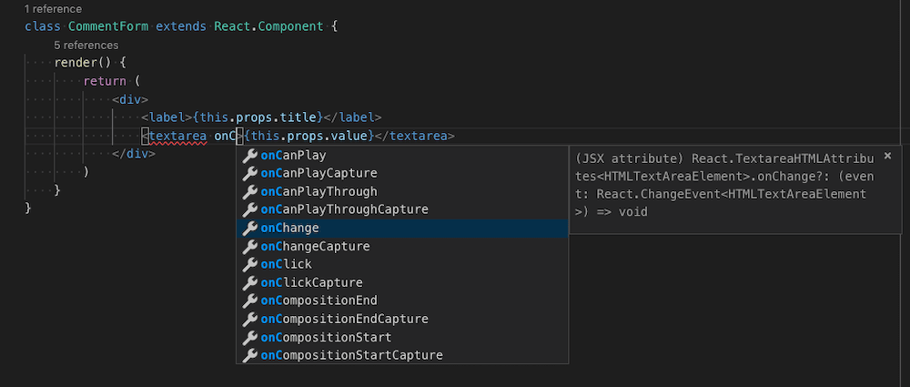
您可以在普通 .js 文件和 .jsx 文件中使用 JSX 语法。
VS Code 还包含 JSX 特有的功能，例如自动闭合 JSX 标签：
Sorry, your browser doesn't support HTML 5 video.
将 "js/ts.autoClosingTags" 设置为 false 以禁用 JSX 标签闭合。
代码导航
代码导航让您可以快速浏览 JavaScript 项目。
- Go to Definition
kb(editor.action.revealDefinition)- 转到符号定义的源代码。 - Peek Definition
kb(editor.action.peekDefinition)- 弹出一个 Peek 窗口，显示符号的定义。 - Go to References
kb(editor.action.goToReferences)- 显示某个符号的所有引用。 - Go to Type Definition - 转到定义符号的类型。对于类的实例，这将显示类本身而不是实例的定义位置。
您可以通过命令面板（kb(workbench.action.showCommands)）中的 Go to Symbol 命令进行符号搜索导航。
- Go to Symbol in File
kb(workbench.action.gotoSymbol) - Go to Symbol in Workspace
kb(workbench.action.showAllSymbols)重命名
按 kb(editor.action.rename) 可在整个 JavaScript 项目中重命名光标下的符号：
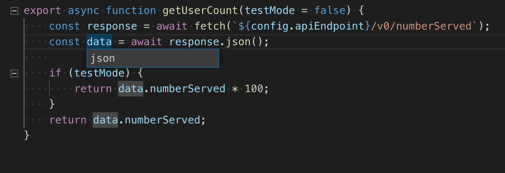
重构
VS Code 包含一些便捷的 JavaScript 重构功能，例如 Extract function 和 Extract constant。只需选择要提取的源代码，然后点击行号旁的灯泡图标或按 (kb(editor.action.quickFix)) 查看可用的重构操作。
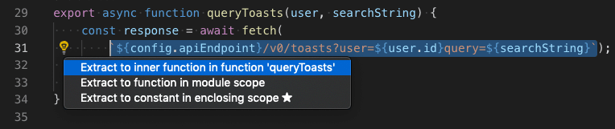
可用的重构包括：
- 提取为方法或函数。
- 提取为常量。
- 在命名导入和命名空间导入之间转换。
- 移动到新文件。
有关重构以及如何为各个重构操作配置键盘快捷键的更多信息，请参阅重构。
此外，Code Action Widget: Include Nearby Quick Fixes（setting(editor.codeActionWidget.includeNearbyQuickFixes)）是一项默认启用的设置，它会在您按下 kb(editor.action.quickFix)（命令 ID editor.action.quickFix）时，激活该行中最近的快速修复，无论光标在该行中的什么位置。
该命令会高亮显示将被重构或通过快速修复来修复的源代码。正常的代码操作和非修复性重构仍然可以在光标位置激活。
未使用的变量和不可达代码
未使用的 JavaScript 代码（例如始终为真的 if 语句的 else 块或未引用的导入）会在编辑器中以淡出效果显示：
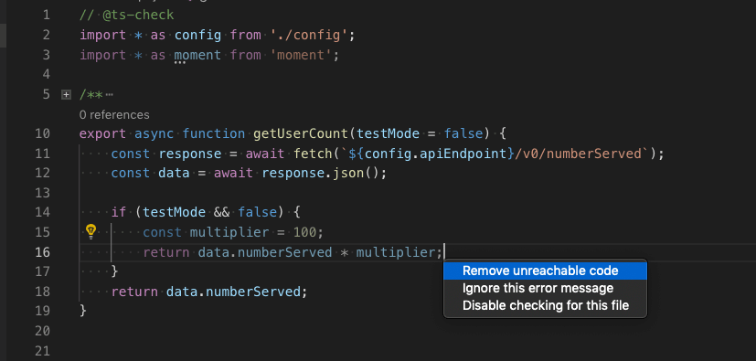
您可以通过将光标放在这些未使用的代码上并触发快速修复命令（kb(editor.action.quickFix)）或点击灯泡图标来快速删除它们。
要禁用未使用代码的淡出效果，请将 "editor.showUnused" 设置为 false。您也可以仅在 JavaScript 中禁用未使用代码的淡出效果，设置如下：
"[javascript]": {
"editor.showUnused": false
},
"[javascriptreact]": {
"editor.showUnused": false
},保存时的代码操作
setting(editor.codeActionsOnSave) 设置允许您配置在文件保存时运行的一组代码操作。例如，您可以通过以下设置启用保存时整理导入：
// 在显式保存时，运行 fixAll 源代码操作。在自动保存（窗口或焦点更改）时，运行 organizeImports 源代码操作。
"editor.codeActionsOnSave": {
"source.fixAll": "explicit",
"source.organizeImports": "always",
}截至目前，支持以下枚举值：
explicit（默认）：在显式保存时触发代码操作。等同于true。always：在显式保存以及窗口或焦点更改导致的自动保存时触发代码操作。never：保存时从不触发代码操作。等同于false。
您还可以将 setting(editor.codeActionsOnSave) 设置为一个按顺序执行的代码操作数组。
以下是一些源代码操作：
"organizeImports"- 保存时启用整理导入。"fixAll"- 保存时自动修复会一次性计算所有可能的修复（适用于所有提供程序，包括 ESLint）。"fixAll.eslint"- 仅针对 ESLint 的自动修复。"addMissingImports"- 保存时添加所有缺失的导入。
有关详细信息，请参阅 Node.js/JavaScript。
代码建议
VS Code 会自动建议一些常见的代码简化，例如将 Promise 上的一连串 .then 调用转换为使用 async 和 await。
Sorry, your browser doesn't support HTML 5 video.
将 "js/ts.suggestionActions.enabled" 设置为 false 以禁用建议。
使用 AI 增强补全
GitHub Copilot 可以为您提供 AI 驱动的内联建议，帮助您更快、更智能地编写代码。GitHub Copilot 为多种语言和广泛的框架提供建议，尤其适用于 Python、JavaScript、TypeScript、Ruby、Go、C# 和 C++。了解有关如何在 VS Code 中开始使用 Copilot 的更多信息。
创建一个新文件——您可以使用命令面板中的 File: New File 命令（kbstyle(F1)）。
在 JavaScript 文件中，输入以下函数头：
function calculateDaysBetweenDates(begin, end) {Copilot 将提供如下建议——使用 kbstyle(Tab) 接受建议：
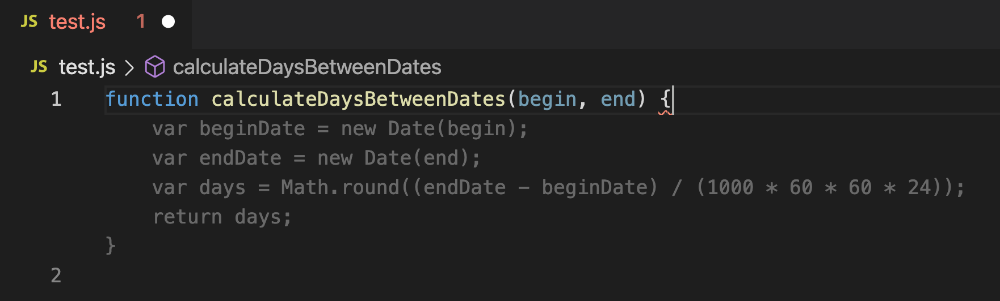
内联提示
内联提示为源代码添加额外的内联信息，帮助您理解代码的作用。
参数名称内联提示 显示函数调用中参数的名称：
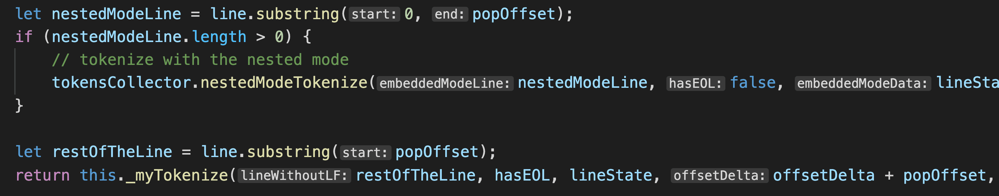
这可以帮助您一眼就能理解每个参数的含义，这对于接受布尔值标志或参数容易混淆的函数尤其有帮助。
要启用参数名称提示，请设置 js/ts.inlayHints.parameterNames。有三个可选值：
none— 禁用参数内联提示。literals— 仅显示字面量（字符串、数字、布尔值）的内联提示。all— 显示所有参数的内联提示。
变量类型内联提示 显示没有显式类型注解的变量的类型。
设置：setting(js/ts.inlayHints.variableTypes.enabled)
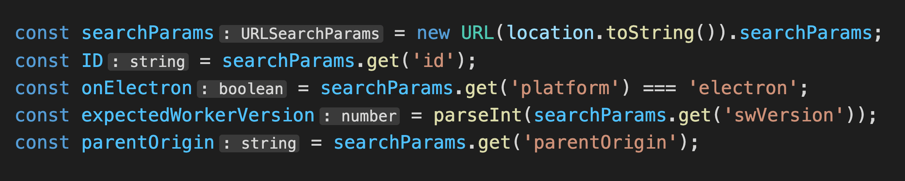
属性类型内联提示 显示没有显式类型注解的类属性的类型。
设置：setting(js/ts.inlayHints.propertyDeclarationTypes.enabled)
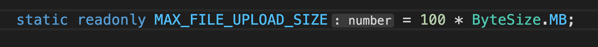
参数类型提示 显示隐式类型参数的类型。
设置：setting(js/ts.inlayHints.parameterTypes.enabled)
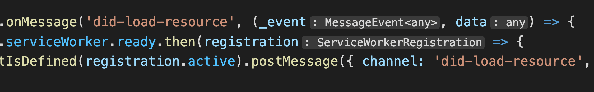
返回类型内联提示 显示没有显式类型注解的函数的返回类型。
设置：setting(js/ts.inlayHints.functionLikeReturnTypes.enabled)

引用 CodeLens
JavaScript 引用 CodeLens 为类、方法、属性和导出对象显示内联引用计数：
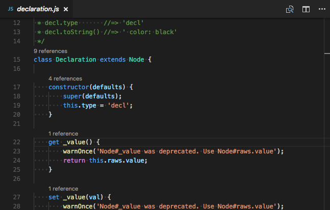
要启用引用 CodeLens，请将 "js/ts.referencesCodeLens.enabled" 设置为 true。
点击引用计数可以快速浏览引用列表：
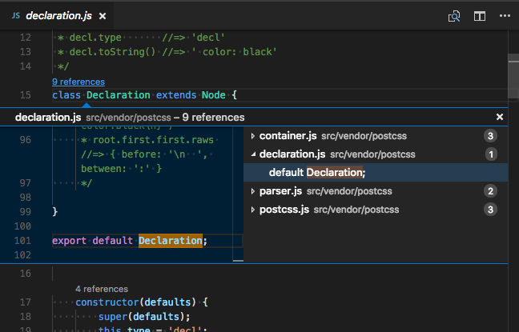
代码检查工具
代码检查工具 为可疑的代码提供警告。虽然 VS Code 不包含内置的 JavaScript 代码检查工具，但扩展市场中有许多 JavaScript 代码检查工具扩展可用。
[!TIP]
此列表是从 VS Code 扩展市场 动态查询的。请阅读描述和评价来决定哪个扩展适合您。
类型检查
您也可以在普通 JavaScript 文件中利用 TypeScript 的一些高级类型检查和错误报告功能。这是发现常见编程错误的绝佳方法。这些类型检查还为 JavaScript 启用了一些令人兴奋的快速修复功能，包括 Add missing import 和 Add missing property。
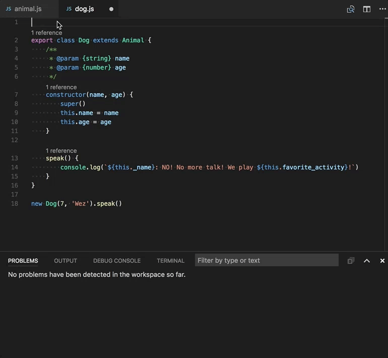
TypeScript 尝试在 .js 文件中推断类型，就像在 .ts 文件中所做的那样。当类型无法推断时，可以通过 JSDoc 注释显式指定。您可以在使用 JavaScript 中阅读更多关于 TypeScript 如何使用 JSDoc 进行 JavaScript 类型检查的信息。
JavaScript 的类型检查是可选的，需要主动启用。现有的 JavaScript 验证工具（如 ESLint）可以与内置的类型检查功能配合使用。
调试
VS Code 为 JavaScript 提供了出色的调试支持。设置断点、检查对象、导航调用堆栈，并在调试控制台中执行代码。请参阅调试主题了解更多信息。
调试客户端代码
您可以使用浏览器调试器来调试客户端代码，例如我们内置的 Edge 和 Chrome 调试器，或 Debugger for Firefox。
调试服务端代码
使用内置调试器在 VS Code 中调试 Node.js。设置很容易，并且有 Node.js 调试教程可以帮助您。

热门扩展
VS Code 自带优秀的 JavaScript 支持，但您还可以通过扩展安装调试器、代码片段、代码检查工具和其他 JavaScript 工具。
[!TIP]
上面显示的扩展是动态查询的。点击上面的扩展卡片阅读描述和评价，以决定哪个扩展最适合您。在扩展市场中查看更多。
后续步骤
继续阅读以了解：
- 使用 JavaScript - 关于 VS Code JavaScript 支持以及如何排查常见问题的更详细信息。
- jsconfig.json -
jsconfig.json项目文件的详细说明。 - IntelliSense - 了解更多关于 IntelliSense 以及如何为您所用语言有效使用它的信息。
- 调试 - 了解如何为您的应用程序设置调试。
- Node.js - 创建 Express Node.js 应用程序的逐步演练。
- TypeScript - VS Code 对 TypeScript 有很好的支持，TypeScript 为您的 JavaScript 代码带来了结构和强类型。
常见问题
VS Code 支持 JSX 和 React Native。您将从 npmjs 类型声明文件仓库自动下载的类型声明（typings）文件中获得 React/JSX 和 React Native 的 IntelliSense。此外，您还可以从扩展市场安装流行的 React Native 扩展。
要为 React Native 启用 ES6 导入语句，您需要将 allowSyntheticDefaultImports 编译器选项设置为 true。这会告诉编译器创建合成的默认成员，从而获得 IntelliSense。React Native 在后台使用 Babel 来创建包含默认成员的适当运行时代码。如果您还想调试 React Native 代码，可以安装 React Native 扩展。
是的，有 VS Code 扩展可用于 Dart 和 Flutter 开发。您可以在 Flutter.dev 文档中了解更多。
自动类型获取 适用于通过 npm（在 package.json 中指定）、Bower（在 bower.json 中指定）下载的依赖项，以及文件夹结构中列出的许多最常见的库（例如 jquery-3.1.1.min.js）。
ES6 风格的导入不起作用。
当您想使用 ES6 风格的导入，但某些类型声明（typings）文件尚未使用 ES6 风格的导出时，请将 TypeScript 编译器选项 allowSyntheticDefaultImports 设置为 true。
{
"compilerOptions": {
"module": "CommonJS",
"target": "ES6",
// 这是您要添加的行
"allowSyntheticDefaultImports": true
},
"exclude": [
"node_modules",
"**/node_modules/*"
]
}是的，可以。您可以在 Node.js 调试主题中看到使用 JavaScript 源映射的示例。
有些用户想使用像管道操作符（|>）这样的提议语法结构。但是，这些目前不受 VS Code JavaScript 语言服务的支持，并被标记为错误。对于仍想使用这些未来功能的用户，我们提供了 setting(js/ts.validate.enable) 设置。
通过设置 js/ts.validate.enable: false，您可以禁用所有内置的语法检查。如果您这样做，我们建议您使用像 ESLint 这样的代码检查工具来验证您的源代码。
可以，但 Flow 的某些语言功能（如类型检查和错误检查）可能会干扰 VS Code 内置的 JavaScript 支持。要了解如何禁用 VS Code 内置的 JavaScript 支持，请参阅禁用 JavaScript 支持。